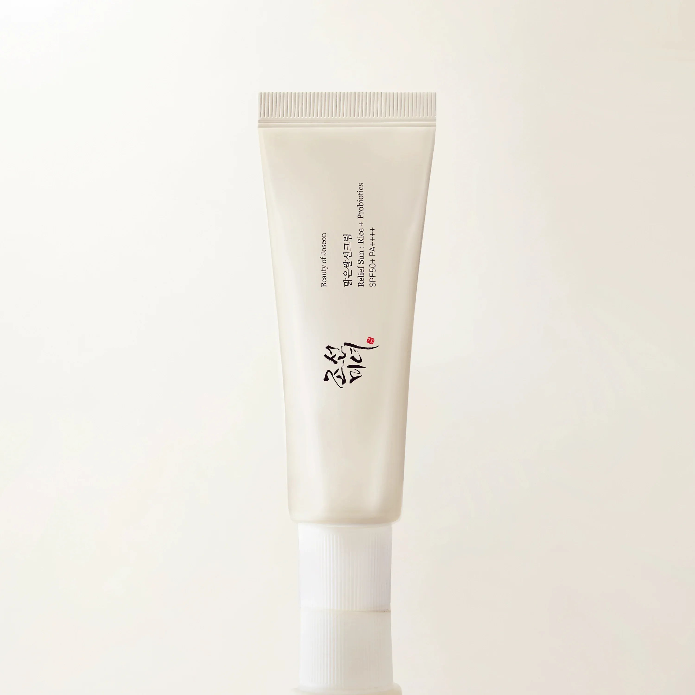
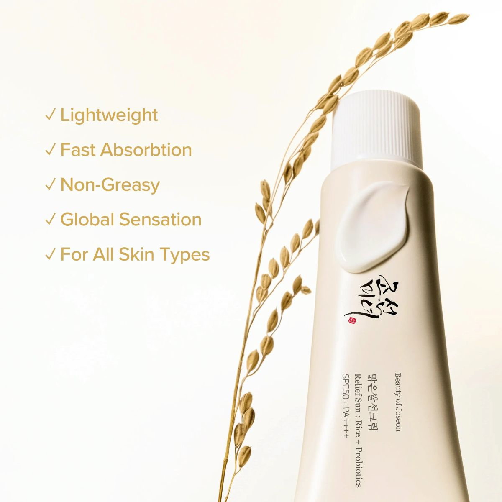
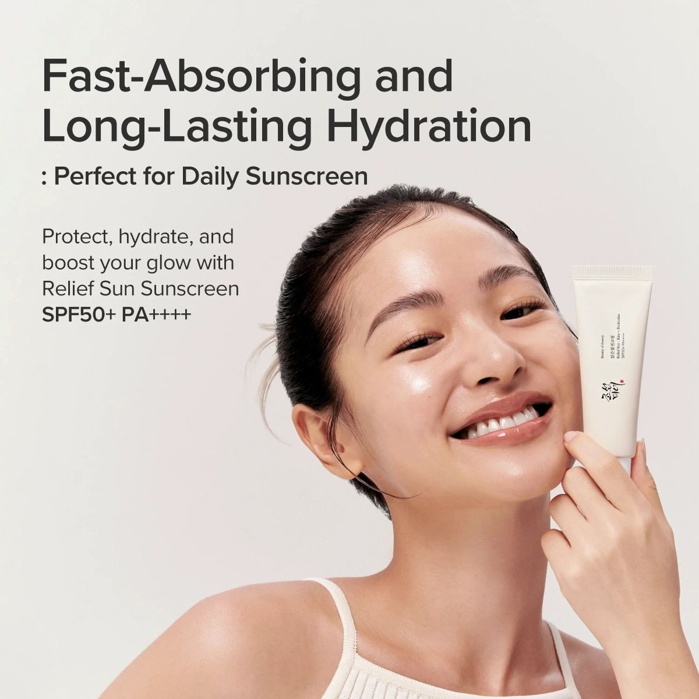
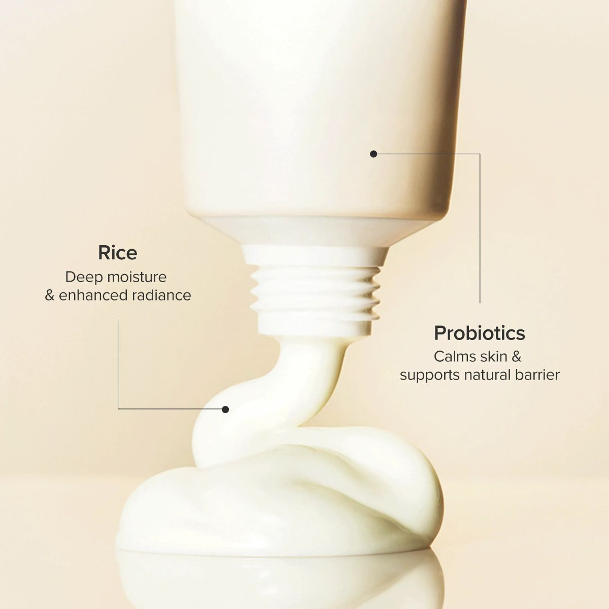
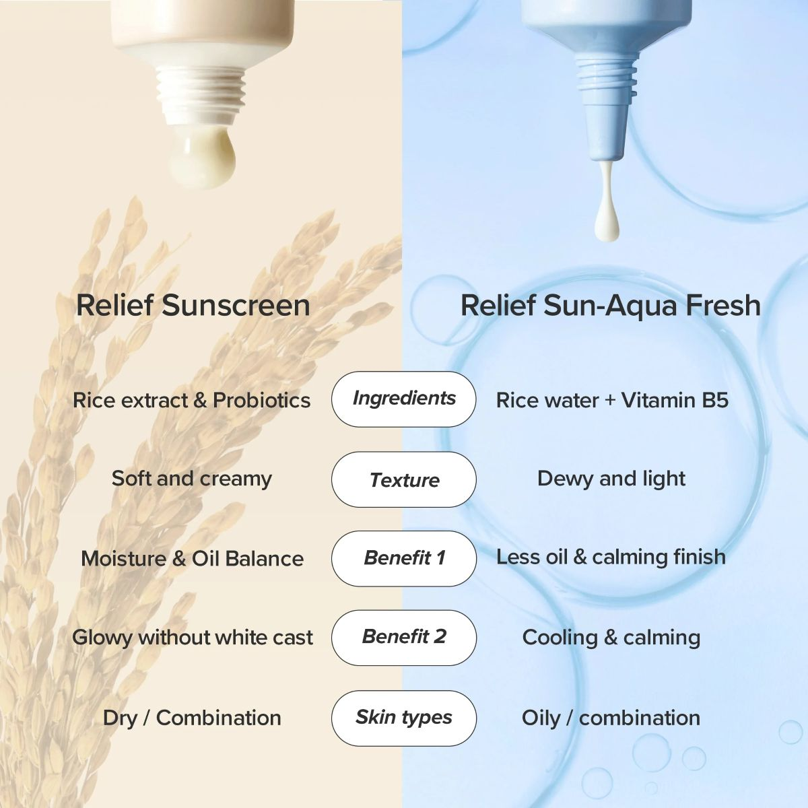
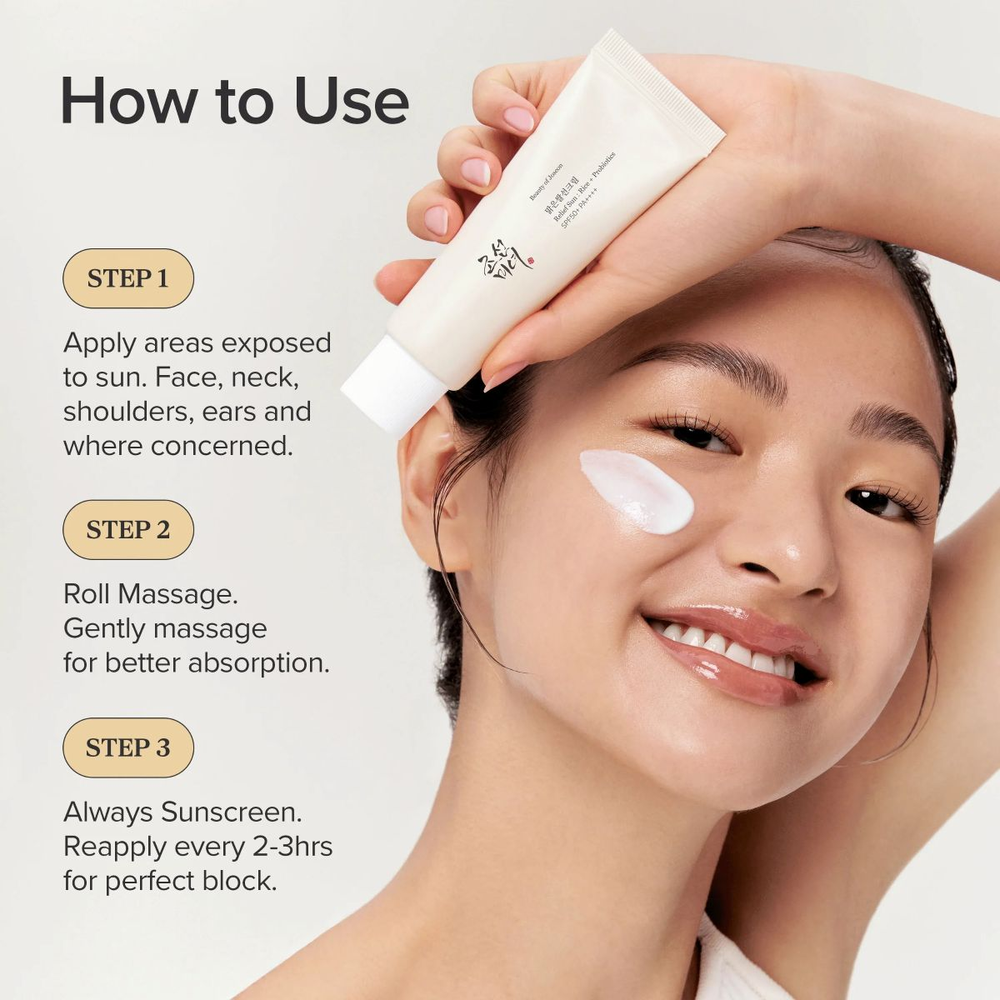

Meet the K-beauty sunscreen that broke the internet. Beauty of Joseon's Relief Sun has become one of the most talked-about SPF products in the world — and once you try it, you'll understand why.
Powered by a next-generation broad-spectrum UV filter system, this SPF50+ PA++++ formula delivers serious sun protection without the heaviness, greasiness, or dreaded white cast that puts people off wearing sunscreen daily. Instead, it absorbs effortlessly into the skin, leaving a subtle, healthy glow that works beautifully on its own or as a makeup base.
What sets the Relief Sun apart is what's packed underneath the SPF. A 30% rice extract base floods skin with brightening ferulic acid, amino acids, vitamins, and minerals Skin Cupid, working to fade dullness and even out skin tone over time. A blend of fermented grain probiotics — including pumpkin, soybean, and rice ferments — supports the skin's microbiome and reinforces the natural barrier. Niacinamide and green tea extract round out the formula with tone-evening and antioxidant benefits.
Clinically proven to be non-irritating, non-sensitising, and suitable for acne-prone skin Beauty of Joseon, this is a sunscreen the whole family can reach for. Fragrance-free and essential oil-free, it's gentle enough for sensitive skin while delivering the kind of protection your skin genuinely needs every day.
This is daily SPF, elevated.
Why we carry this
This is one of those products that genuinely lives up to the hype. We tried the Beauty of Joseon Relief Sun ourselves before ever listing it, and it immediately became a daily staple. It's the SPF that made us stop dreading sunscreen.
The formula is lightweight to the point where you forget you're wearing it — no white cast, no greasy residue, and it layers under makeup or moisturiser without pilling. For something at this price point, the finish is remarkably elegant. It feels like a product that should cost three times as much.
We source this directly through authorised EU distributors, so every tube is genuine, correctly imported, and within date. No grey market, no question marks about authenticity. That matters to us — and it should matter to you.
If you're only going to add one new product to your routine this year, make it a proper SPF. This is that SPF.
— The YSP Collective Team
| SPF Rating SPF50+ PA++++ | |
| Protection Type Broad-spectrum UVA & UVB (chemical/organic filters) | |
| Size 50ml | |
| Skin Type All skin types, including sensitive and acne-prone | |
| Finish Lightweight, dewy glow — no white cast | |
| Key Ingredients 30% Rice Extract, Niacinamide, Fermented Grain Probiotics, Green Tea Extract, Ginseng, Glycerin | |
| Free From Fragrance-free, essential oil-free | |
| Vegan & Cruelty-Free Yes | |
| Reapplication Every 2–3 hours for continuous protection | |
| How to Use Apply as the final step of your morning skincare routine, 15–30 minutes before sun exposure | |
| Clinically Tested Non-irritating, non-sensitising, suitable for acne-prone skin |